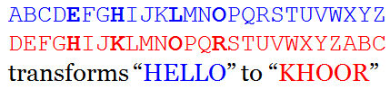
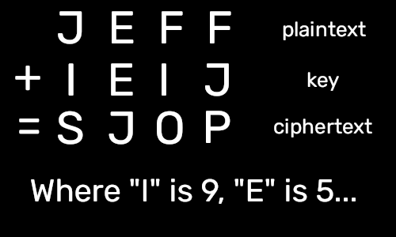
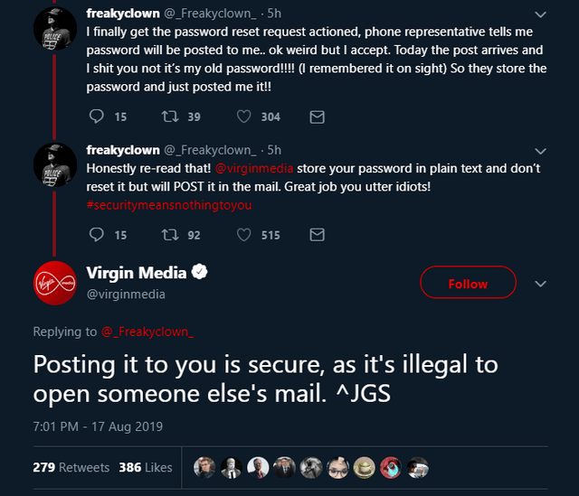
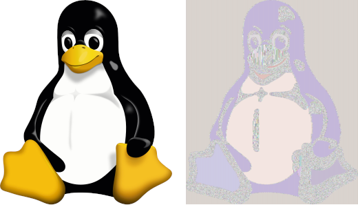
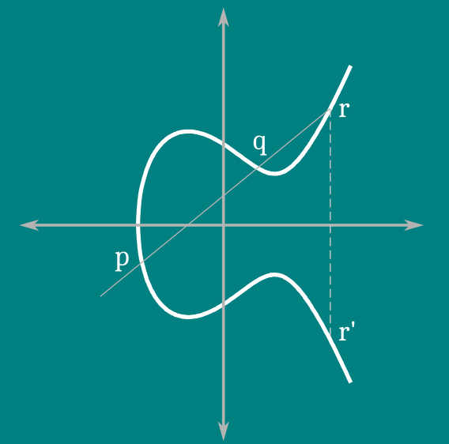
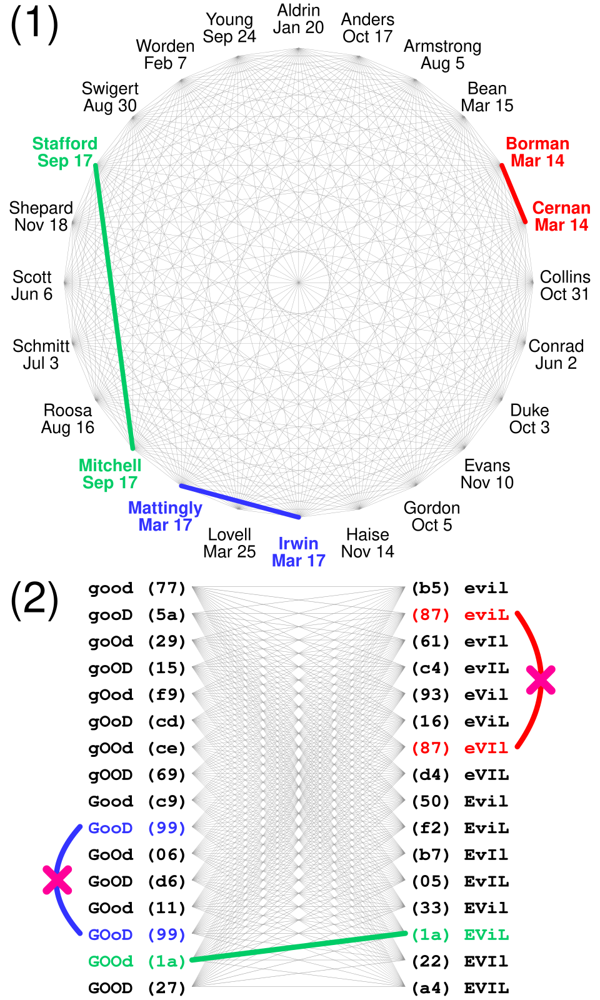

Cybersecurity investigates the practice of protecting computer systems from unauthorized access. To say that this discipline
relies on cryptography would be an understatement. Passwords are useless if their transmission is intercepted, and due to how
the internet is structured, this possibility cannot be eliminated. Therefore, to prevent attackers from learning secrets like
these, we need some way for only the intended recipients to be able to decipher our message. Of course, speed is also a factor,
and truly reliable ways to achieve this are too inefficient to be reasonably used, so in practice, as long as a secret becomes
irrelevant before it can be cracked, the system is considered secure (this could range from seconds to years).
Overview
Cryptography is essentially the study of keeping secrets. Encryption is the process of turning plaintext (ordinary information)
into ciphertext (apparent gibberish), while the reverse process is decryption. Algorithms for encryption/decryption are called ciphers,
and some basic kinds include substitution ciphers (replacing letters) as well as transposition ciphers (scrambling letters). Kerckhoff's
principle states that an encryption method
should be resistant to attack even if everyone knows exactly how it works (most historical systems are not secure in this sense).
Another fundamental idea in modern cryptography is that of computational hardness; some mathematical problems are presumed to have
no efficient solution, so the encryption becomes exponentially stronger with the length of the problem, and we can make such a problem
as long as needed.

The Caesar cipher (a substitution cipher) was one of the first encryption methods in history, supposedly used by Julius
Caesar when communicating with his generals. Each letter in the alphabet is shifted forward by three spaces, with the last
few wrapping back to the beginning. For example, the plaintext "JEFF" has a ciphertext of "MHII".
Symmetric-Key Cryptography
A secret needed to encrypt or decrypt ciphertext is called a key. Using the Caesar cipher as an example, we can define the number of spaces
to shift as a key (there is nothing special about the number three, it just happens to be what Caesar himself used). There are only
26 unique keys for this method (since there are 26 letters, so e.g. 2 and 28 produce the exact same ciphertext), which means that if
someone intercepts the message and knows that the Caesar cipher is in use, they would easily be able to decrypt it by brute force
(meaning they can simply try every key until they get a meaningful result). In a symmetric-key system, knowing the key allows you to
both encrypt and decrypt messages. In the case of the Caesar cipher, to decrypt a message, you simply apply the Caesar cipher
shifting backward instead of forward. This means that keys have to be shared through a channel that nobody can eavesdrop on, which is
a significant logistical drawback. However, symmetric-key cryptography is more computationally efficient than other methods, and due to
its simplicity, it was the only known kind until the 20th century.

The Vigenère cipher (a symmetric encryption method) is essentially a Caesar cipher where the shift is different for each letter's
position in the plaintext. The key is the sequence of shifts, which is repeated until it reaches the length of the plaintext. If the
key is at least as long as the message, chosen completely at random, and never used again, then this is called the one-time pad,
which is the only encryption method that is proven to be unbreakable.
Asymmetric Cryptography
In asymmetric cryptography, there are different keys for encryption and decryption. Only the decryption key is secret, so the encryption
key is called a public key, and the decryption key is called a private key. Two parties can establish both of these keys together even
if an adversary is listening to their communication. Theoretically, the private key can be determined from the public key, but if this
process is computationally hard, then there is no issue (assuming a long enough key is chosen). The biggest advantage of asymmetric
cryptography is that there is no need to protect communication lines from eavesdroppers, but this comes at the cost of longer keys and
slower encryption/decryption. Therefore, asymmetric cryptography is primarily used to exchange keys for symmetric encryption methods
securely over channels that may be monitored.
Hash Functions
The goal of hashing is to make a function that is very difficult to invert, or in other words, a function that is much easier to compute
in one direction than the other. Outputs from a hash function are always the same length as each other regardless of how long the input is.
The most easily understood application of hash functions is the secure storage of passwords; instead of storing an account's password as
plaintext, hashing it first will make it so that even if hackers gain access to the database, they will not have any passwords. When a user
attempts to log in, their password is then hashed, and if the hash matches what the database has, then it grants them access. Since hashes
have a fixed length, it is inevitable that some distinct inputs will have the same hash, which is called a collision. However, a good hash
function should be resistant to collisions, i.e., it should be difficult to find them (otherwise, it would be possible to log in to an
account by entering an incorrect password, for example).

If you ever realize that your password is being stored in plaintext on some website, make sure you aren't reusing it elsewhere because
it is fairly likely to fall into nefarious hands at some point. To check if this has already happened, you can put your email address
into haveibeenpwned.com (not affiliated).
Encryption Methods
The most well-known modern symmetric encryption method is the Advanced Encryption Standard (AES), which is a type of block cipher (meaning
it takes plaintext of a fixed length and outputs ciphertext of a fixed length). In order to encrypt a message longer than the block size,
an algorithm called a mode of operation must be employed. The obvious mode of operation (electronic codebook or ECB) is to simply split up
the plaintext into blocks and encrypt them separately, but this may reveal information about the message, since if there are identical blocks
of plaintext, they will also be identical in the ciphertext. For better security, the most common mode of operation (cipher block chaining or CBC)
first applies the [XOR](Exclusive or is an operation that takes 2 bits as input. It outputs 1 if exactly one of the inputs is 1 and 0 otherwise. When
applied to two bit sequences, it outputs a binary sequence that is the result of the XOR operation on each pair of corresponding bits. For example,
1, 0, 0, 1 XOR 0, 0, 1, 1 results in 1 XOR 0, 0 XOR 0, 0 XOR 1, 1 XOR 1, which evaluates to 1, 0, 1, 0.)
operation to each block of plaintext with the previous block (a randomly generated block is used for the first one).

Even using secure, modern encryption algorithms, ECB mode still reveals lots of information about the structure of the plaintext. Encrypting an
image of Tux using SHA-256 in ECB mode allows you to see its shape, for example, even if the colour information is completely lost.
For asymmetric cryptography, Diffie-Hellman key exchange was the first proposed method of sharing a private key. As an analogy, suppose two people
(Alice and Bob) publicly agree on a colour of paint (e.g. red), and additionally select a secret colour for themselves (e.g. blue and yellow). They
then mix the public colour with their secret colour so that Alice has purple and Bob has orange. The next step is to publicly trade these colours with
each other; this does not reveal their secret colours since separating paint takes a long time (they might be able to identify purple as a mixture of
red and blue, but they do not know the exact ratio). Finally, they mix the colour they received with their secret colour so that they now both have a
shared secret mixture of 1 part red, 1 part blue, and 1 part yellow. Any observers will be unaware of this since they never learned the secret colours
and therefore would not know what to mix with the publicly traded colours to get the shared secret mixture. We can also extend this to more than
two parties simultaneously exchanging a private key efficiently.
Finite Field Diffie-Hellman is the simplest version, in which modular arithmetic is used instead of mixing paint. The integers modulo some prime number
(without 0) form a [group](A group is a collection of objects with an operation that satisfies certain properties. Most importantly, the operation must act on
any two objects in the group to produce another element of the group. For example, the positive integers modulo 11 form a group under multiplication, where the
set of objects includes the numbers 1 to 10, and the result of multiplication is the remainder of their product when divided by 11. For example, 3 times 4 gives 12,
and 12 divided by 11 is 1 remainder 1, so 3 times 4 is 1 in this group.) under multiplication, and something called a finite field if we include addition. Alice
and Bob first choose one of these finite fields to work within by picking a prime number (e.g. 11). They also agree on a primitive root, which is a number that can turn
into any other number in the group through exponentiation (e.g. 2). They each choose a secret integer in the group (e.g. 3 and 4), and the
"mixing" operation is raising the primitive root to the power of their secret integer (2^3=8 and 2^4=5). After exchanging,
they raise the result they received from the other to the power of their secret integer (5^3=4, 8^4=4), and these final numbers should be the same. Someone monitoring
the numbers exchanged would not be able to efficiently figure out final number (4) due to the computational hardness assumption of the Diffie-Hellman problem
(which is related to the discrete logarithm problem). To expand upon that, to find a secret number (3) from its publicly exchanged mixed number (8) and primitive root (2),
one needs to raise the root (2) to the power of every integer in the field until they find the exponent (3) that matches the exchanged number (8). This means that selecting
a large prime number makes it impractical to break the encryption (although a larger primitive root is just as secure as a smaller one).

Diffie-Hellman key exchange works for other finite [cyclic](A group is cyclic if every element of the group is a power of a single element called the generator.
The generator is therefore a generalization of the notion of primitive roots for the integers.) groups, including the group of points on an elliptic curve over
a finite field. The set of points on an elliptic curve has an addition operation given by p+q=r', and
by adding a point to itself, we have the equivalent of exponentiation. Since the discrete logarithm problem is
even more computationally hard for elliptic curves, this provides the same amount of security as Finite Field Diffie-Hellman with smaller prime numbers.
Onto hash functions, there are several common algorithms, including MD5 and SHA-2. Verification of file integrity is another major application; part of secure
communication includes ensuring that nobody has intercepted and modified any messages in transit. In practice,
many file sharing services will compute the hash of a file and transmit it securely. They then send the file, and the recipient computes the hash of the
file they received to make sure they match. Using hash functions with good collision resistance, like SHA-2, it is very difficult to modify or replace the file
while keeping the same hash value. This allows people to widely share a file using various (possibly insecure) sources without having to worry about it not
being the file they were expecting. Many hash functions use the Merkle-Damgård (MD) construction, in which the input is split up into blocks and then compressed
in such a way that the original information is lost. However, these are vulnerable to "chosen-prefix" collision attacks, where an attacker can make a file have
whatever hash they want by appending data to the end of it, allowing them to mimic the hash of a different file.

Hash functions are vulnerable to a type of attack that exploits a statistical phenomenon known as the [birthday problem](The birthday problem is the unintuitive
conclusion that a group of 23 random people has a 50% chance of containing two people with the same birthday instead of 23/365. This is because any one person
can share a birthday with any other person, and there is no requirement that a particular person shares a birthday with someone else.), making them roughly half as
strong as symmetric encryption algorithms with the same key length. In a birthday attack, rather than trying to make a particular malicious file's hash match a
particular benign file's hash by brute force, an attacker can try to make several malicious files match several different benign files. This increases the likelihood
of a collision because any one of the malicious files can have the same hash as any one of the benign files.
Conclusion
That may seem like a lot of information right now, but this is just the tip of the iceberg as far as cryptography goes. The purpose of this article was primarily
to introduce some of the basic notions so that we can dive into some more obscure findings in the field later. Keep in mind that there may be legal restrictions
on cryptography where you live, so use this information responsibly (although all of it can be pretty easily found through publicly available sources). Also, do
not rely on your own implementations of these concepts based on these explanations for applications where security actually matters (unless you know what you're
doing). I left out a lot of detail in my explanations because the article was getting too long, but feel free to ask questions if anything was unclear.
{kind=link}
{kind=link}
{kind=link}